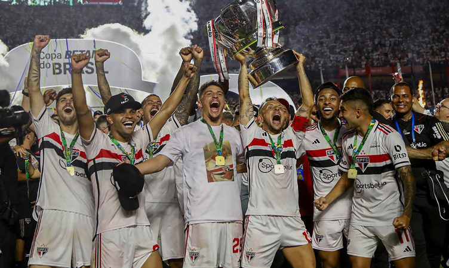

São Paulo FC
São Paulo FC
Galeria de Títulos
O arsenal de conquistas nacionais e internacionais que cimentam o São Paulo FC como o Soberano.
Copa do Brasil
Campeão Inédito (2023)
Após longos anos de espera, o grande tabu ruiu. A equipe liderada por Dorival Júnior, com atuações de gala de Lucas Moura e Calleri, bateu rivais locais (Palmeiras e Corinthians) antes de superar o Flamengo nas finais, vencendo por 1 a 0 no Maracanã e cravando o empate heroico no MorumBIS ao som da sua torcida insandecida.
O Fim do Tabu! (Adicione o Vídeo da Final)
Campeonato Brasileiro (6x)
1977, 1986, 1991, 2006, 2007, 2008
O São Paulo construiu sua hegemonia nacional ao ser o primeiro clube a faturar o Tricampeonato consecutivo (2006-2008) na era dos pontos corridos com o técnico Muricy Ramalho e um sistema defensivo implacável. Mas não podemos esquecer o chutaço de Careca em 1986 que garantiu o histórico bi e a consistência da máquina de 1991.
Soberano no Brasileirão (Adicione Vídeos ou Fotos do Tri)
Demais Conquistas
Supercopa do Brasil (1x)
2024
O derradeiro título recente que faltava. Vitória catártica nos pênaltis sobre o rival Palmeiras no Mineirão, com show do goleiro Rafael defendendo duas cobranças e garantindo a taça.
Copa Sul-Americana (1x)
2012
Uma taça inesquecível de despedida temporária de Lucas Moura, com uma final polêmica contra o Tigre e a consagração absoluta de Rogério Ceni levantando mais um caneco continental.
Campeonato Paulista (22x)
1931 até o histórico 2021
Fundação estadual da potência são-paulina. A conquista recente de 2021 sobre o Palmeiras (com Crespo no comando) tirou o grito entalado na garganta durante quase uma década de jejum.
Supercopa Libertadores
1993
Troféu disputado apenas pelas equipes já campeãs da principal competição. O São Paulo conquistou o continente confirmando que era o maior time da América sob a tutela de Telê Santana.